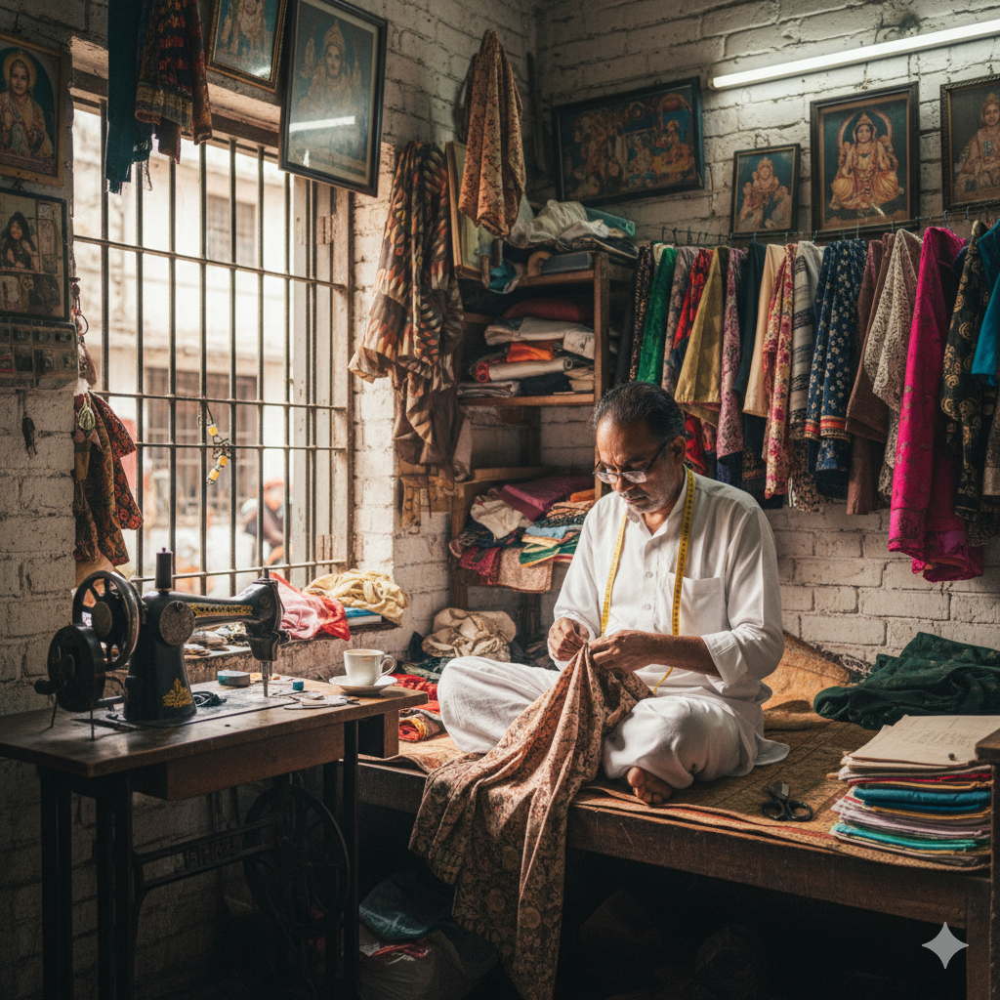
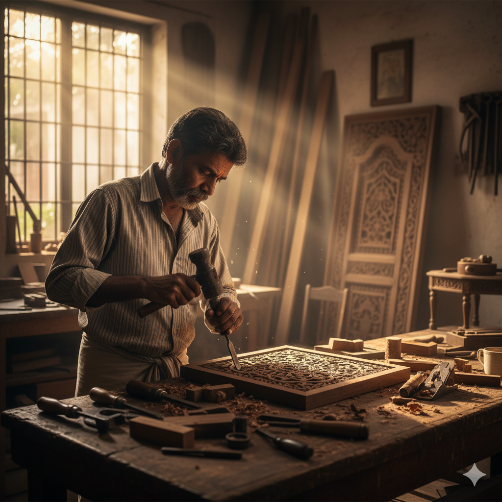
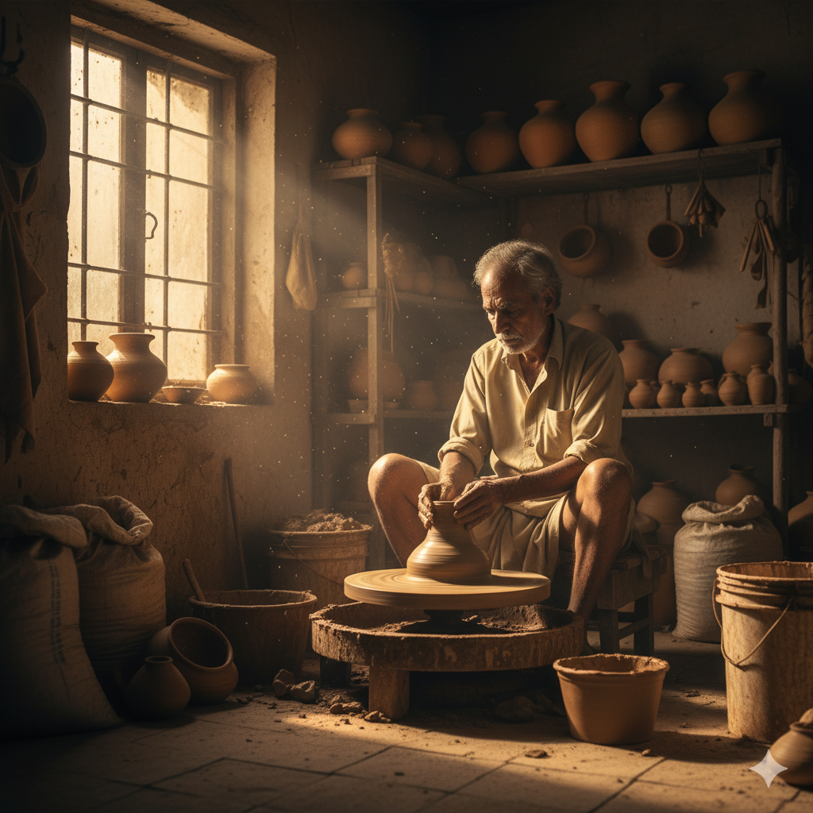
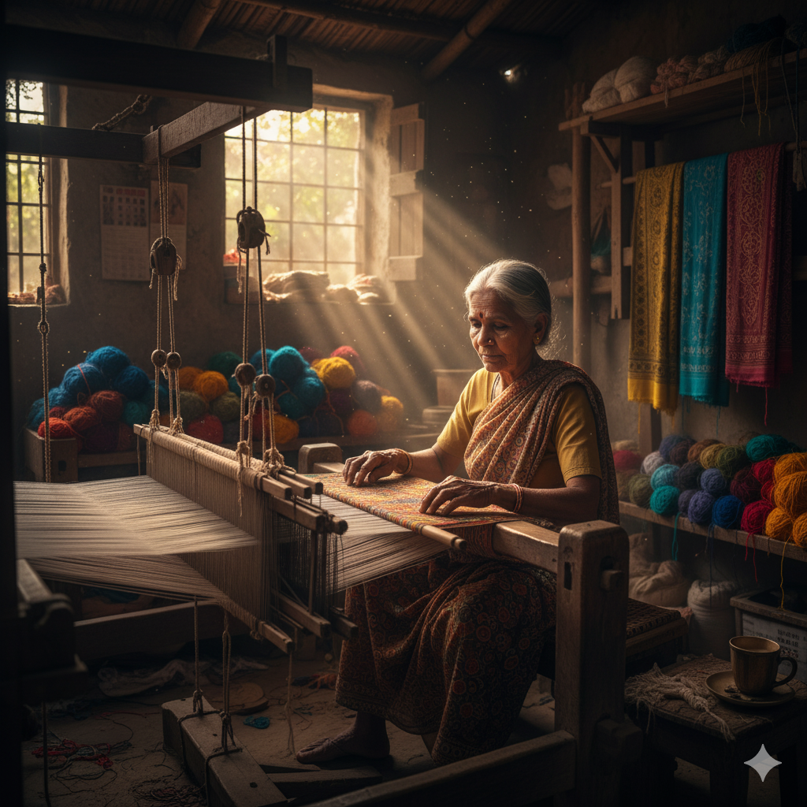

Tailer

Professionally design, measure, and sew custom-fitted clothing for clients.
Responsibilities include fabric selection, garment alteration, and maintaining high-quality craftsmanship in all bespoke apparel.
Farmer
Manage and cultivate land to grow crops or raise livestock. This job involves planting, harvesting, equipment maintenance, and making decisions based on weather patterns and market demands.
Carpenter

Construct, install, and repair structures and fixtures made of wood and other materials. Work includes framing walls, building cabinets, installing drywall, and reading blueprints for residential or commercial projects.
Electrician
Install, maintain, and repair electrical wiring, equipment, and fixtures. Must ensure that work is performed safely and adheres to all local and national electrical codes and regulations.
Pottery

Create artistic and functional ceramic objects, such as bowls, vases, and sculptures, using a potter's wheel or hand-building techniques. Requires skill in glazing and kiln operation.
Weaving

Produce textiles by interlacing a set of vertical yarns (warp) and a set of horizontal yarns (weft). Often involves operating a loom, preparing materials, and designing complex patterns.
Plumber
Install and repair pipes and fixtures related to water, gas, and sanitation systems in homes and businesses. This includes troubleshooting leaks, installing water heaters, and ensuring proper drainage.